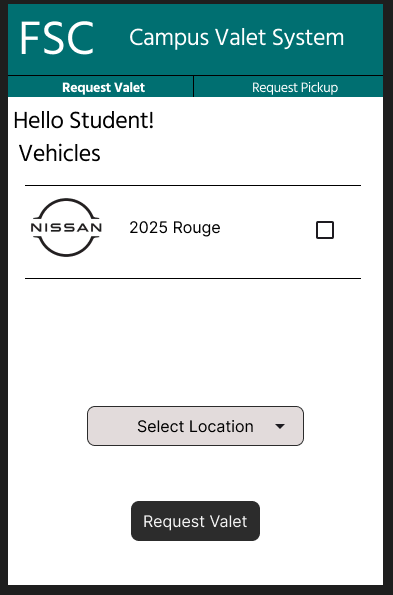
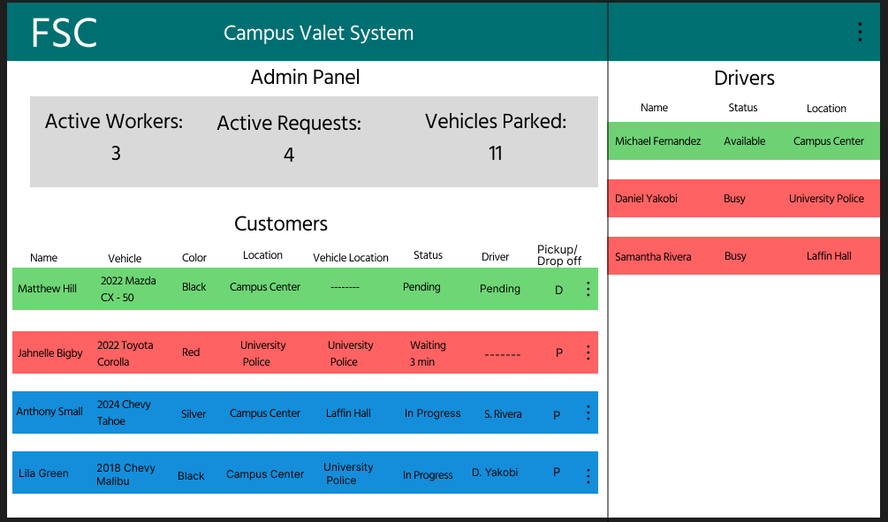

FSC Valet
A valet management web application for organizing student vehicles, drop-offs, and pickups.
Status: Completed
Project Type: Campus Valet Management / Web Application
← Back to Selected WorkProject Overview
FSC Valet was developed to address parking congestion at Farmingdale State College. The application organizes the information and requests involved in a campus valet service.
The completed project connects student vehicle information with drop-off and pickup workflows. It also includes systems analysis and design documentation covering requirements, feasibility, process models, and interfaces.
Users and Workflows
- Students: Select vehicles, submit service requests, and follow the drop-off and pickup process.
- Valet Attendants: Coordinate vehicle handoffs, parking, and retrieval.
- Administrators: Review service requests, attendant information, and vehicle status.
Application Focus
- Organizing student vehicle information.
- Managing vehicle drop-offs and pickups.
- Presenting valet service requests.
- Coordinating information across service roles.
- Providing clear interfaces for campus valet operations.
Technologies
- PHP: Server-side application logic.
- MySQL: Database storage for application records.
- HTML: Page structure and interface elements.
- CSS: Interface styling and page layout.
Analysis and Design
The project documentation explains the service's requirements, operations, data, and user interactions. This work established the structure for the application.
- Functional and non-functional requirements.
- Feasibility and cost-benefit analysis.
- Functional decomposition and data flow diagrams.
- Use cases and sequence diagrams.
- State transition and activity diagrams.
- Interface designs for students, attendants, and administrators.
- Implementation, training, and risk management plans.
Service Workflow
- A student selects a vehicle and service location before submitting a valet request.
- An attendant coordinates the vehicle drop-off.
- The vehicle is parked and its location is recorded.
- The student requests pickup when ready to leave.
- An attendant retrieves the vehicle and completes the handoff at the pickup location.
Interface Design
Student Request Screen

The student interface centers on choosing a vehicle and selecting a service location before requesting valet assistance.
Administrator Panel

The administrator interface brings requests, attendant information, and vehicle status together for monitoring.
Project Outcome
FSC Valet was completed as a campus valet management application with supporting analysis and design work. The project connects a physical service workflow with a database-driven web interface.
It provided experience translating operational needs into requirements, process models, database records, and user-facing screens.